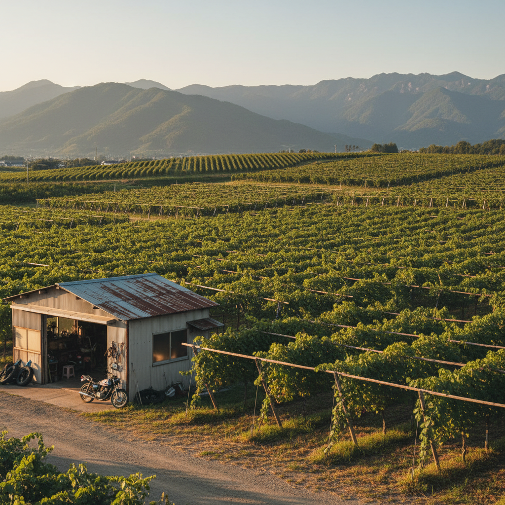
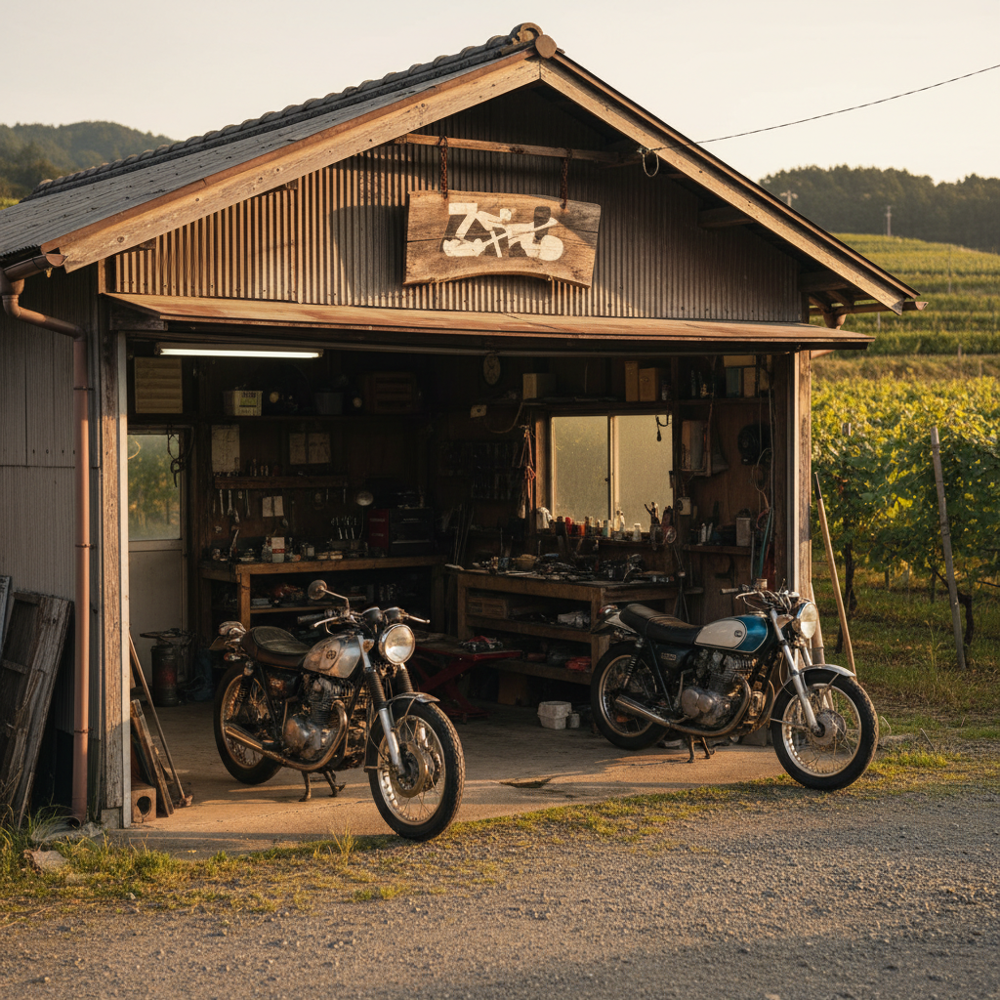
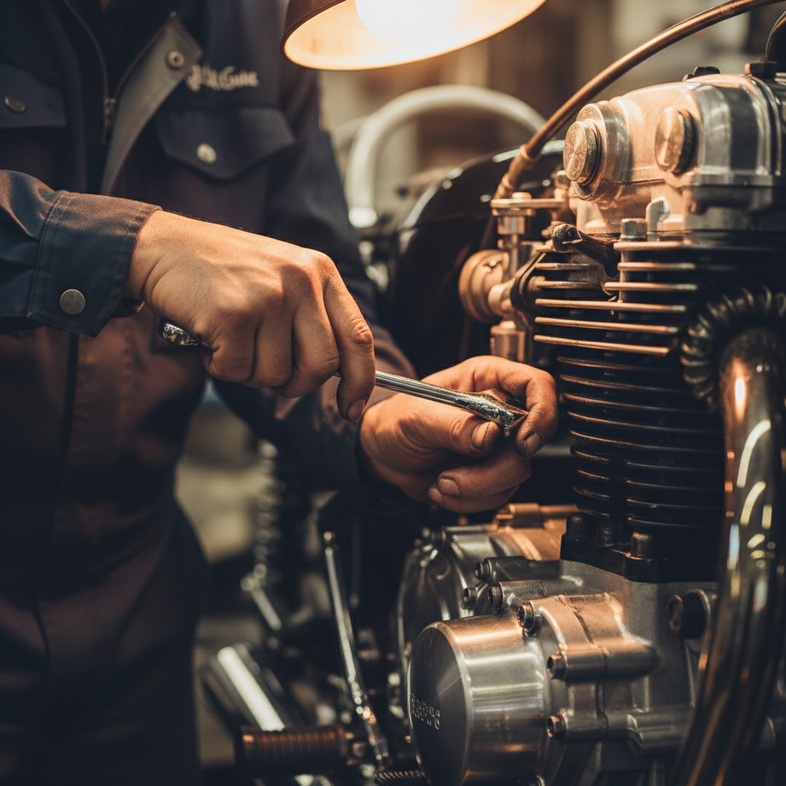
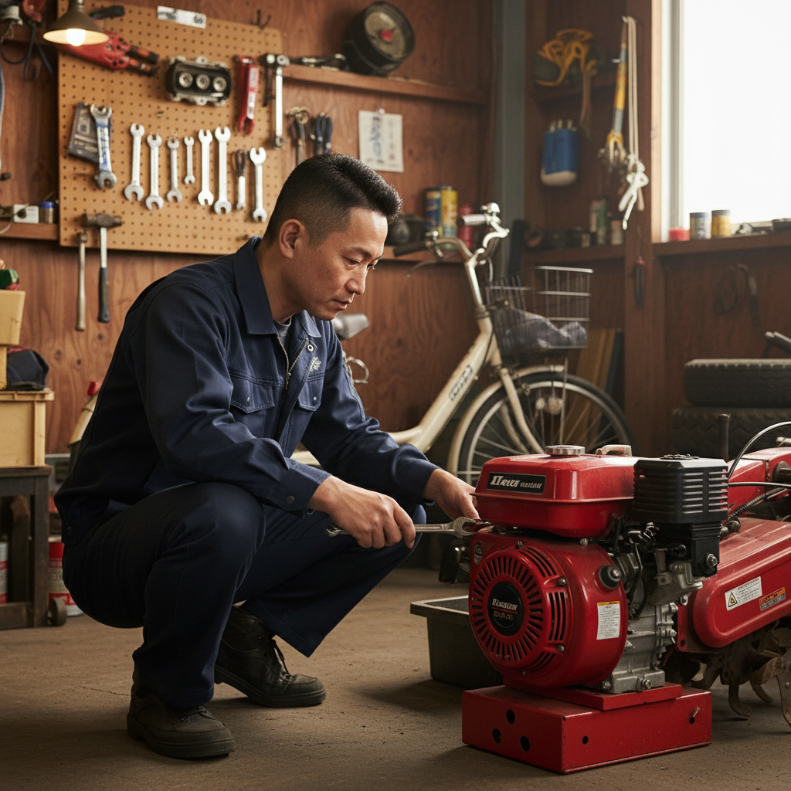
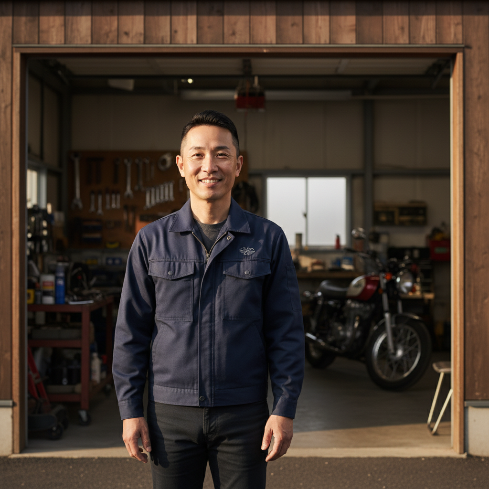

現場で高木様にご提示しご反応OKだった動画＋同業バイクの参考CM。この2本のトーン・訴求設計を基準にGARAGE226動画を仕上げます。
個人ガレージの実写素材ベース。テロップ＋BGM主体、ナレ最小。落ち着いた・実直なトーン。「町の修理屋」感の出し方を踏襲。
YouTubeで見る →ヤマハ発動機公式のバイクCM。「整備や手間こそが愛着になる」という情緒訴求を、実写×短尺×ナレ＋テロップで構成。バイク好き／オーナー目線の温度感を踏襲します。
YouTubeで見る →30〜60代男性中心。山梨・勝沼周辺で「近所に相談できる場所がない」層。
バイク王・KAWASAKI出身の腕で、バイク／農機／電動自転車・キックボードをワンストップ修理。
「山梨にバイクも農機も直せるところがあるんだ」と覚えてもらう。月30万円の修理売上に寄与。
提供素材（奥様撮影）＋AI生成のインサート静止画／タイトル背景を組み合わせて編集します。
下記の画像は編集後の雰囲気を示すムードボードです（最終映像は提供素材ベースになります）。

ナレ：山梨・勝沼。
狙い：「葡萄畑×バイクガレージ」というギャップで3秒以内にスクロールを止める。
ナレ：そんな声を、よく聞きます。
映像：バイク／農機／電動の3連カットイン → 路肩で止まったバイク。

ナレ：ガレージニニロク、はじめました。
狙い：BGMがワンランク上がり、屋号で「解」を提示。

映像：手元クローズアップ＋工具の音。ナレなし。
注：メーカーロゴは出さず、文中で「過去経歴」として明示。

ナレ：ここで、ぜんぶ直します。
狙い：本案件最大の差別化。「バイク屋なのに農機？」のギャップが武器。

狙い：「人柄」と「地域」で締める。地方の修理屋は「相談しやすそう」が最大の決め手。
ナレ：お気軽に、どうぞ。
映像：連絡先カード → 「GARAGE226」ロゴ静止 → フェードアウト。
本人ナレ（駒田様の声）または無音BGMのみ、いずれもご選択可能。下記は本人ナレ／プロTTS用の最小ナレ案（約60字）。
0-3秒のフック差し替えで、配信媒体・ターゲット別に派生展開可能です。